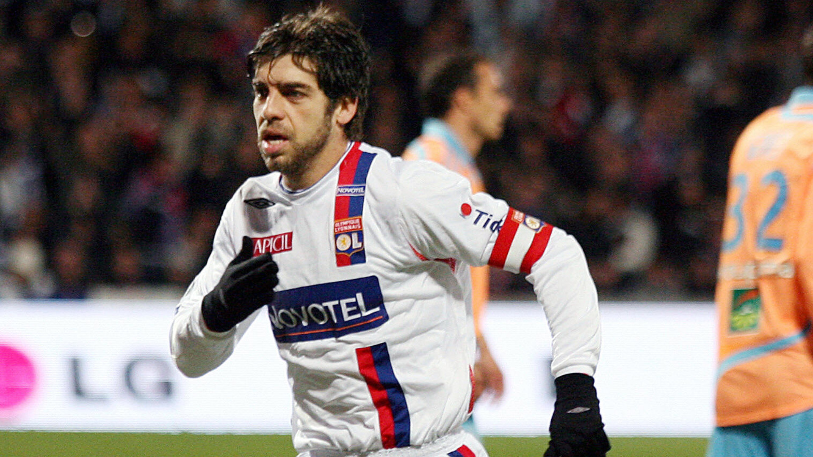

Juninho Pernambucano, de son vrai nom Antônio Augusto Ribeiro Reis Jr., est un ancien footballeur brésilien né le 30 janvier 1975. Il est principalement connu pour sa carrière au poste de milieu de terrain et ses compétences exceptionnelles lors des coups francs.
Regardez quelques-uns des coups francs légendaires de Juninho dans la vidéo ci-dessous :